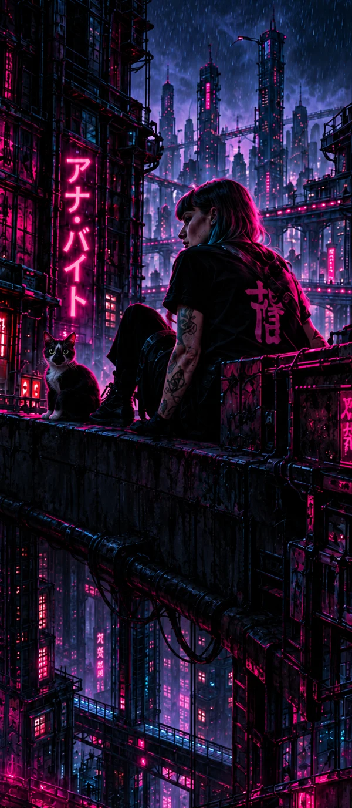

01
ESTRUTURA
Formas orgânicas e mecânicas em equilíbrio.

04SOBRE A ARTISTA
Arte. Tecnologia. Pele real.
Ana Byte é tatuadora e artista visual. Seu trabalho habita o limiar entre o orgânico e o impossível, onde a técnica encontra o imaginário.
Cada projeto é uma colaboração. A sua história encontra o meu universo.
Conheça meu universoUm universo
em movimento.



04ALÉM DO TRAÇO
Tatuagem, desenho e um desejo constante de experimentar.
Há cinco anos, Ana trabalha como tatuadora e artista. Sua base é a grande São Paulo, mas a arte também a leva a outras cidades do Brasil e do mundo.
Seu universo tem uma essência futurista e existencialista. Tecnologia, natureza e identidade se encontram em formas orgânicas, estruturas mecânicas e contrastes de cor.
A criação também acontece fora da pele: Ana produz e vende artes digitais impressas e desenvolve trabalhos por encomenda. O desenho atravessa esses formatos e abre espaço para novas possibilidades.
No Instagram, ela compartilha essa produção com o mundo. Entre uma ideia e outra, segue buscando novos desafios e outras maneiras de colocar o imaginário em movimento.
Atendimento com hora marcada na Liberdade.
Rua Sen. Felício dos Santos, 373.
03PROCESSO
Ideia. Arte. Transformação.
Cada tatuagem começa em outro plano e ganha vida no mundo real. Sua história encontra forma, cor e movimento.
Comece pela ideia


03MEU ESTILO
Estrutura orgânica, energia visual e matéria em movimento.
Formas orgânicas e mecânicas em equilíbrio.

Movimento e cor em cada composição.

Texturas e contrastes que ganham corpo na pele.
05VAMOS CRIAR JUNTOS?
Vamos transformar em arte na sua pele.
Conte o que te inspira. Referências, personagens ou uma história sua. Você não precisa chegar com tudo resolvido: o resto, a gente constrói junto.